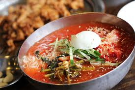
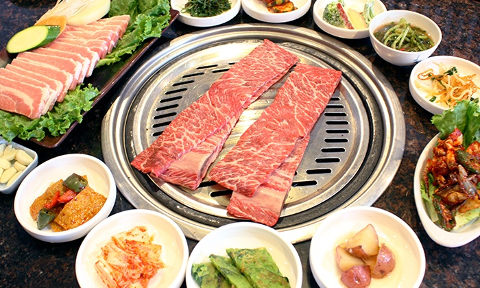

Bibimbab
Having been raised in a Korean-cultured environment, I was exposed
to many different kinds of korean food. As a result, I have grown
to love korean food all together. The photo to the right is a korean dish
known as bibimbap! It is pretty well-known to all Koreans and even many
non-Koreans. I strangely didn't like bibimbap so much as a kid but I now
absolutely love bibimbap. I recommend everyone who hasn't tried it to at least
try it once.
Naengmyeon
This korean dish is known as naengmyeon! It's perfect to eat on a
hot day and this dish really brings back a lot of memories for me. I used
to hate this dish with a passion however as I've grown older, I also came
to really find its sweet spot! It's known to be quite chewy because of
its noodles which is why I believe it's necessary to cut the noodles before
eating it.

KBBQ
Now who doesn't love a good korean bbq? It's not even
a question of how amazing and delicious kbbq is. It definitely ranks
at the top of my list of favorite foods because of its all-you-can-eat
option at a fair price. My favorite type of meat to eat when I go for kbbq
is the spicy pork with grilled onions on the side. I always tell my mom that I truly think that
I can eat meat everyday if I had the opportunity!
